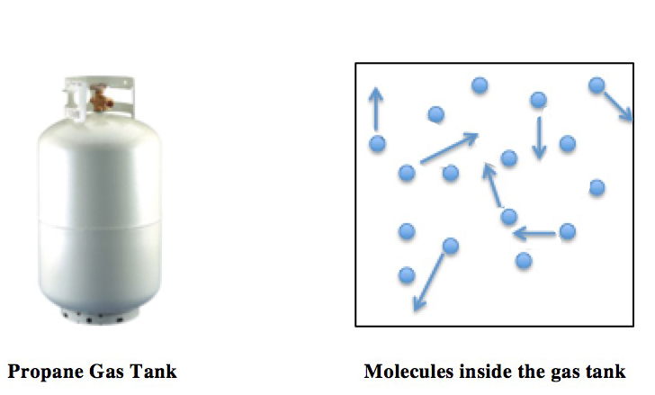
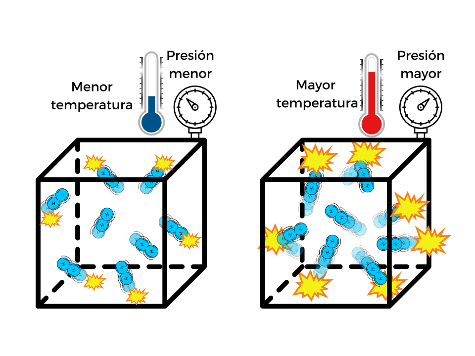
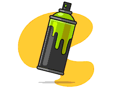
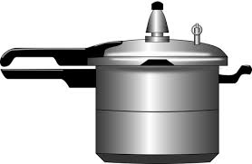
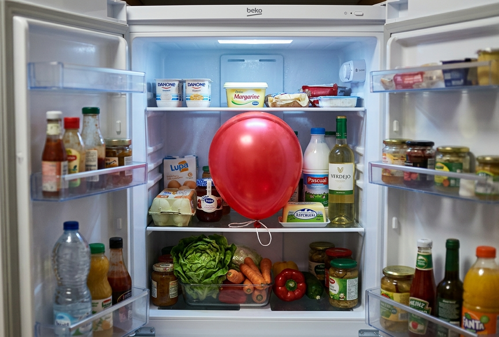

🧠 Fase 1: Introducción al modelo cinético-molecular
📖 Texto de teoría (adaptado)
La materia está formada por partículas muy pequeñas que no podemos ver a simple vista.
En los gases, estas partículas:
- Se mueven continuamente en todas direcciones.
- Chocan entre sí y contra las paredes del recipiente.
- Están muy separadas unas de otras.
La temperatura nos indica la energía de las partículas:
- Si aumenta la temperatura, las partículas se mueven más rápido.
- Si baja la temperatura, se mueven más lento.
- La presión es la fuerza con la que las partículas chocan contra las paredes del recipiente.
El volumen es el espacio que ocupa el gas.

✏️ Actividad 1: Comprensión del texto
- Explica con tus palabras qué es un gas.
- ¿Cómo se mueven las partículas de un gas?
- ¿Qué ocurre con las partículas cuando aumenta la temperatura?
- ¿Qué es la presión de un gas?
- Copia y completa:Si aumenta la temperatura, las partículas se mueven ________.
🔬 Fase 2: Simulación con PhET
💻 Actividad 2: Exploramos los gases
Vamos a usar un simulador para ver cómo se comportan los gases.
https://phet.colorado.edu/es/simulations/gases-intro
🔬 Instrucciones:
- Abre el simulador de gases.
- Añade partículas al recipiente.
- Cambia el volumen.
- Cambia la temperatura.
- Observa lo que ocurre.
✏️ Actividad 2: Cuaderno de laboratorio virtual
Completa la tabla:
| Cambio que haces | ¿Qué ocurre con la presión? | ¿Por qué crees que pasa? |
| Aumentar temperatura | ||
| Disminuir volumen | ||
| Aumentar partículas |
❓ Preguntas de investigación
- ¿Qué ocurre cuando calientas el gas?
- ¿Chocan más o menos las partículas cuando aumenta la temperatura?
- ¿Qué relación hay entre temperatura y presión?
📊 Fase 3: Leyes de los gases y gráficas
📘 Texto de teoría (adaptado)
Los gases cumplen unas reglas llamadas leyes de los gases:
- Ley de Boyle: si el volumen baja, la presión sube (si la temperatura no cambia).
- Ley de Charles: si la temperatura sube, el volumen también sube.
- Ley de Gay-Lussac: si la temperatura sube, la presión sube.
Estas leyes nos ayudan a entender cómo cambian los gases. 
✏️ Actividad 3: Identificamos relaciones
Marca la opción correcta:
- Si el volumen disminuye, la presión:
- ☐ Baja
- ☐ Sube
- Si aumenta la temperatura, el volumen:
- ☐ Aumenta
- ☐ Disminuye
- Si aumenta la temperatura, la presión:
- ☐ Aumenta
- ☐ Disminuye
📈 Actividad 4: Interpretamos gráficas
Dibuja y responde:
- ¿Cómo es la gráfica entre presión y volumen?
- ☐ Recta
- ☐ Curva
- ¿Cómo es la gráfica entre temperatura y volumen?
- ☐ Recta
- ☐ Curva
- ¿Qué significa una línea recta en una gráfica?
🔢 Actividad 5: Cambios de unidades
Recuerda:
- Temperatura en Kelvin: 👉 K = ºC + 273
- Presión: 1 atm = 101.325 Pa
- ✏️ Calcula:
- 25 ºC en Kelvin = ______ K
- 100 ºC en Kelvin = ______ K
- 2 atm en Pa = ______ Pa
🔥 Fase 4: Retos de la vida real
Actividad 6: Problemas reales
Lee y responde:
🥫 1. Lata de aerosol
Una lata de desodorante se deja al sol. Se calienta mucho.

Preguntas:
- ¿Qué ocurre con el gas dentro?
- ¿Aumenta la presión o disminuye?
- ¿Es peligroso? ¿Por qué?
🍲 2. Olla a presión
Una olla a presión se calienta en la cocina.

Preguntas:
- ¿Qué pasa con la temperatura?
- ¿Qué pasa con la presión dentro?
- ¿Por qué cocina más rápido la comida?
🎈 3. Globo en frío
Un globo se mete en el frigorífico.

Preguntas:
- ¿Qué le ocurre al volumen del globo?
- ¿Por qué pasa esto?
- ¿Qué relación tiene con la temperatura?
📝 Actividad final: Conclusión
Responde:
- ¿Qué has aprendido sobre los gases?
- ¿Dónde ves los gases en tu vida diaria?
- ¿Qué actividad te ha resultado más interesante? ¿Por qué?
¿Quieres saber más?
Si quieres ampliar lo aprendido, visualiza los siguientes vídeos propuestos por el profesor: